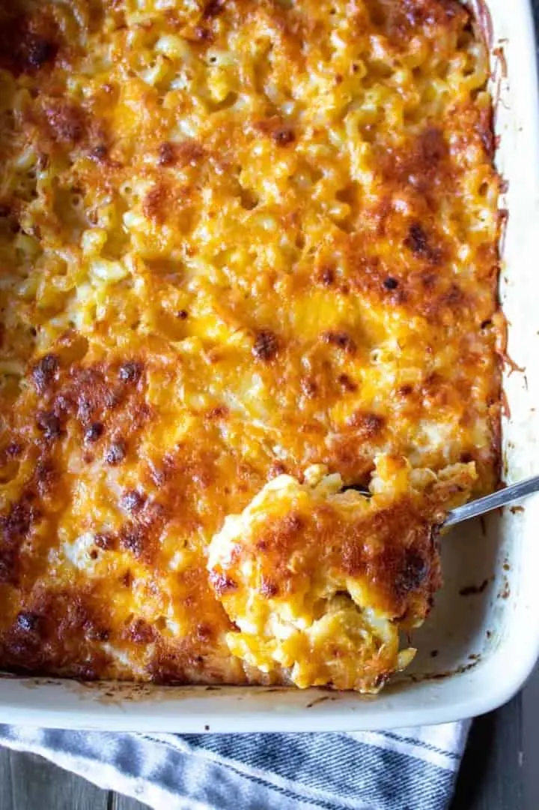
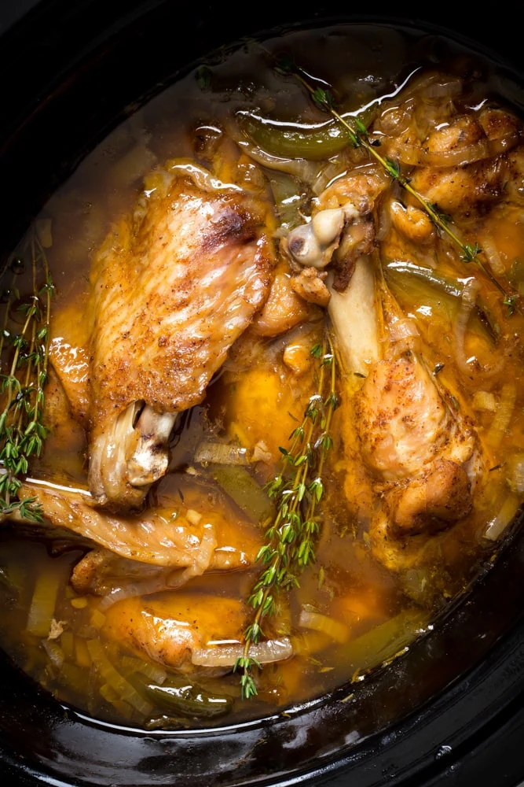
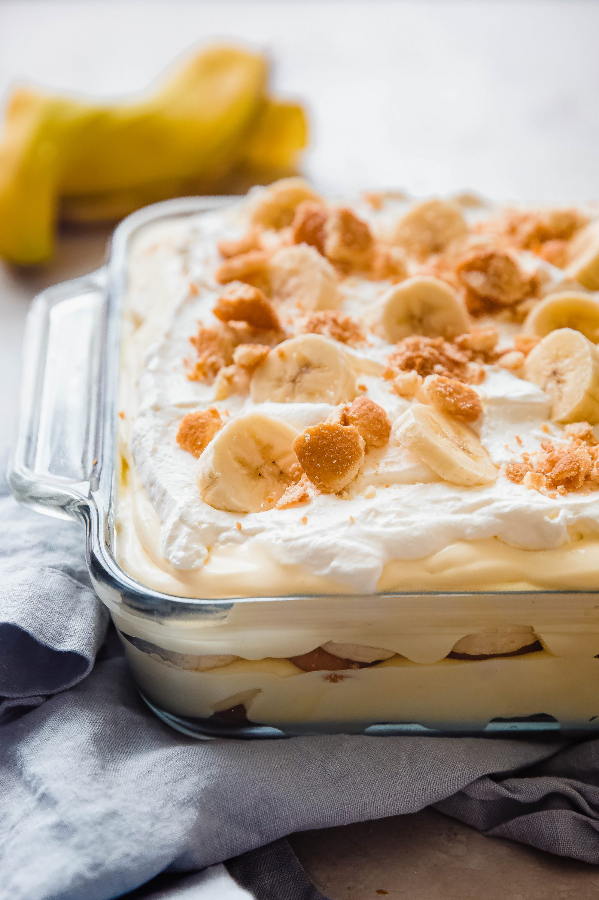

The Soul Collection
Your Soul Food favorites edition
Created by Queen P
Baked Macaroni & Cheese
Ingredients
- 32oz Box of Macaroni and Cheese
- 1 1/2 stick of butter
- 3 cups of Mild Cheddar Cheese
- 6 cups of Finely Shredded Cheddar Cheese
- 1 bag of Monterary Cheddar Cubed Cheese
- 2 cups of Milk
- 2 cups of Heavy Whipping Cream
- 1 1/2 cups of Half and Half
- 1 can sweetened condensed milk
- 4 eggs
- Knorr chicken powder bouillon cube powder
- Season Mix: peppercorn meldley grinder, iodized salt, garlic powder, onion powder, ground black pepper, smoked paprika
Instructions
- Preheat oven to 375
- Grease large size pan with 1 stick of butter (not margarine y’al), and set aside
- Put water into a large pot and sprinkle Knorr chicken boullion cube powder into water
- Partially cook elbow macaroni for 6-7 minuntes
- While pasta is cooking make a wet mix of finely shredded cheddar cheese, milk, heavy whipping cream, half and half, and eggs. Lightly season with season mix listed above
- Once pasta is partially cooked mix with half stick of butter. Lightly season with season mix listed above.
- Combine wet mix, seasoned pasta, and bag of cubed cheese into bowl and mix throughly
- Pour mix and spread Into large size pan
- Sprinkle mild cheddar cheeder cheese on top of macaroni mix
- Bake for 45 minutes to 1 hour until cheese creates a dark golden brown crust
Collard Greens

Ingredients
- 4 bags or bunches of collard greens
- 2 pounds of smoked turkey wings or necks
- 10 cloves whole cloves of garlic
- 3 tablespoons of minced garlic
- 1 bag of frozen onion and pepper mix
- 1 tablespoon of hot sauce
- 1/2 tablespoon sugar
- Splash of white distilled vinegar or apple cider vinegar
- Season Mix: Cajun choice blackened seasonings, Knorr chicken boullion cube powder, crushed red pepper, garlic powder, onion powder, thyme leaves, salt, peppercorn medley grinder
Instructions
- Place smoked turkey meat with a little sprinkle of knorrs seasoning in a pot with water
- Allow to boil on medium heat for atleast 45 minutes or enough for meat to soften
- While smoke turkey is cooking throughly wash collard greens in a bowl then dump in a pot
- Add season mix, minced garlic, garlic cloves, onion, hot sauce, sugar, and your choice of vinegar in a pot
- Allow to cook for 30 minutes to allow greens to steam and become smaller
- Mix smoked turkey into greens and add more water
- Now allow for greens and smoked turkey to simmer together on medium heat for another 30 minutes.
- Let sit for 10 minutes before serving
Candied Yams

Ingredients
- 10 medium size sweet potatoes
- 2 stick of butter
- 1 1/2 cups of water
- 1 1/2 cups brown sugar
- 1 cups granulated sugar
- 4 tbsp vanilla extract
- 2 tsp cinnamon
- 1 tsp nutmeg
- 1 tsp ground all spice
- Butter cooking spray
Instructions
- Preheat Oven 350
- Wash sweet potatoes in warm water
- Place washed sweet potatoes in a large pot with water allow for potatoes to come to a boil
- Don’t allow sweet potatoes to completely soften while boiling, only just enough to stick a knife 1/2 through
- Drain, and allow to cool then take off skin
- Cut sweet potaoes and place in a large long pan that is sprayed with butter cooking spray and set aside
- Melt butter, brown sugar, and sugar on low to medium heat to create a sugar mix
- Pour sugar mix into sweet potatoes.
- Season sweet potatoes and sugar mix with cinnamon, nutmeg, and ground all spice
- Mix sugar mix and sweet potatoes in a bowl
- Pour candied yams in large bake dish add 1 1/2 cups of water and cover with foil
- Allow yams to cook for 35-45 minutes or until yams have softened
Crockpot Turkey Wings
Ingredients
- 2 pounds of Turkey Wings
- 1/2 stick of butter
- 1 bag of frozen peppers and onion mix
- 7 cloves of garlic
- 1 large white onion
- 4 tablespoons of olive oil
- 2 tablespoons of minced garlic
- 1 Lipton onion soup mix
- 2 tablespoons of cornstarch
- 4 cups of water
- Seasoning mix of natures seasoning, Italian seasoning, Tony
- Chacheres more spice, salt, ground black pepper, onionpowder. ( 1/2 teaspoon of each)
Instructions
- Throughly wash turkey wings with water and lemon juice in bowl
- Combine turkey wings, seasoning mix, fresh garlic cloves, chopped white onion, minced garlic, peppers and onion frozen mix, butter, onion soup mix and olive oil in crockpot.
- Stir ingredients togeter until turkey wings are completely coated with seasoning
- Mix 2 tablespoons of cornstarch with water in a measuring up and pour Into crock pot.
- Pour in 2 cups of cold water.
- Allow to cook in croc pot throughout the day on high for 3-4 hours.
- Periodically check and add water until meat has fallen off the bone.
Banana Pudding
Ingredients
- 1 box of vanilla wafers
- 1 stick of butter
- 6 sliced bannas thin
- 11/2 tablespoon of lemon juice
- 1 can of condensed milk
- 1 large container of whipped cream